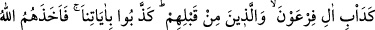
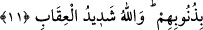
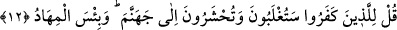

ateşin odunları ve tutuşturucularıdır.
11. (Onların yolu) Firavun hanedanının ve onlardan öncekilerin tuttuğu yola
benzer. Onlar bizim âyetlerimizi yalanladılar, Allah da kendilerini günahları
yüzünden yakalayıverdi. Allah’ın cezası çok şiddetlidir.
“De’b” kelimesi burada masdar olup “insanın çaba gösterdiği iş, yorulasıya,
tükenesiye çalıştığı şey” demektir. Daha çok, şan, hal ve âdet anlamındadır. Yani
bunların küfürde Allah’ın azabından ve muâhezesinden kurtulamamadaki halleri,
Firavun ashâbının hâli gibidir. Firavun soyundan önce gelen Nûh kavmi, Lût kavmi gibi
kâfir milletlerin halleri de böyle olmuştur. Çünkü onlar da bizim âyetlerimizi; yani
kitaplarımızı ve peygamberlerimizi yalanlamışlardır. Allah da bunlara karşı azabıyla
muamele etmeyi âdet edinmiştir. Nitekim bunların hiçbiri, Allah’ın azabından kaçıp
kurtulacak bir yer bulamamışlardır. Bu kâfirlerin halleri de aynen ötekilerin halleri
gibidir. “Allah da bunları günahları yüzünden yakalayıverdi.”
Karşılığı “günah” olarak verilen “zenb” kelimesinin Arap dilindeki aslı “arkadan
gelen, tâbi olan” mânasınadır. Cerîme “zenb” olarak adlandırılmıştır. Çünkü işlenen bir
günahın, girilen bir cerîmenin cezası, sahibini hemen arkasından takib eder.
“Allah, cezası pek çetin olandır.” Allah, âyetlerini ve peygamberlerini yalanlayanları
şiddetle cezâlandıracaktır.
12. (Rasûlüm!) İnkâr edenlere de ki: Yakında mağlûb olacaksınız ve cehenneme
sürüleceksiniz. Orası kalınacak ne kötü bir yerdir!
İbn Abbas’tan rivâyet edildiğine göre burada kâfirlerden murad, âyetin nüzûlüne
sebep olan Yahûdîlerdir. Çünkü Rasûlullah (s.a.) Bedir savaşında müşriklere karşı
galip gelince Yahûdîler: “Vallahi bu bize Mûsâ’nın müjdelediği, aynı zamanda sıfatı
Tevrat’ta bulunan ümmî peygamberin tâ kendisidir.” dediler ve tâbi olmak istediler.
İçlerinden bazıları dediler ki: “Bu kadar acele etmeye gerek yoktur! O’nun başka bir
savaşa girmesini bekleyip neticesine bakalım! Ondan sonra karar veririz.” Uhud savaşı
olunca Peygamberimiz hakkında şüpheye düştüler. Halbuki Peygamberimizle onlar
arasında belirli bir süreye kadar anlaşmaları da bulunuyordu, bunu bozdular. Yahûdî
büyüklerinden Kâ’b İbnü’l-Eşref altmış süvarisi ile Mekke müşriklerine gitti.